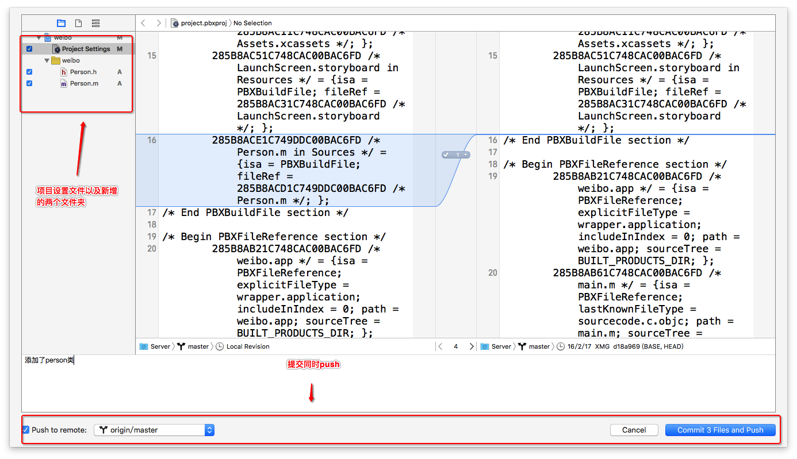
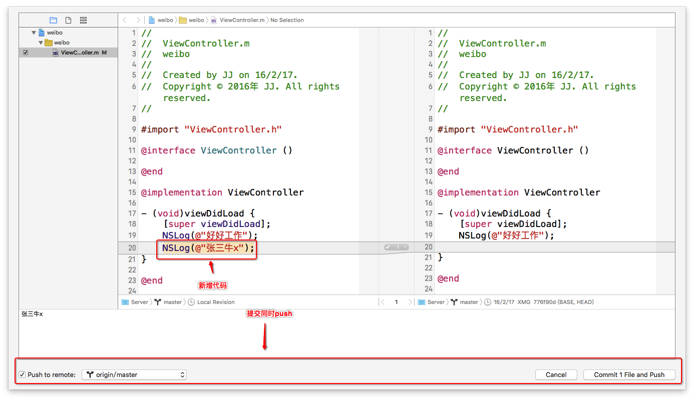
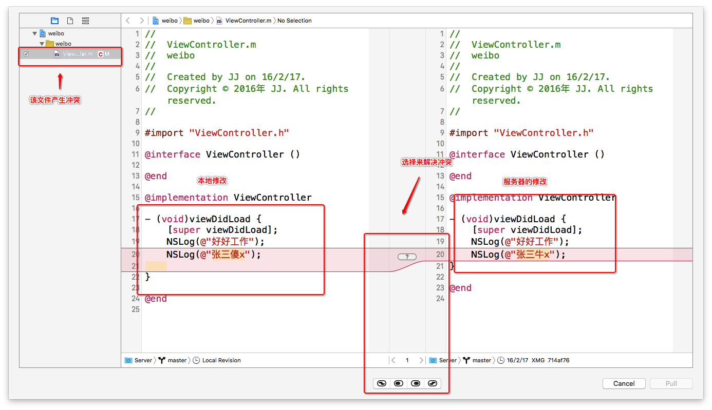
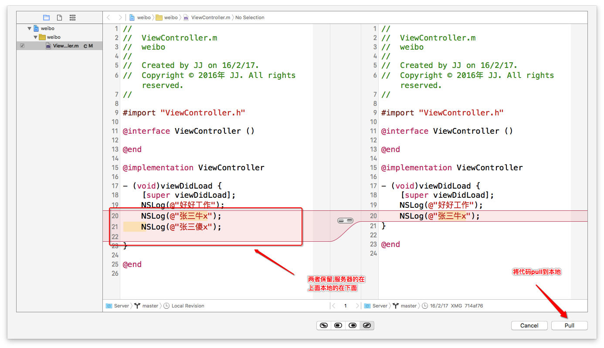
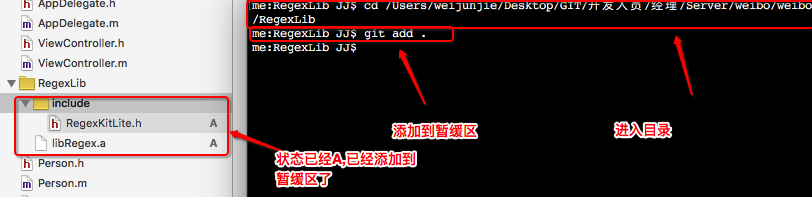
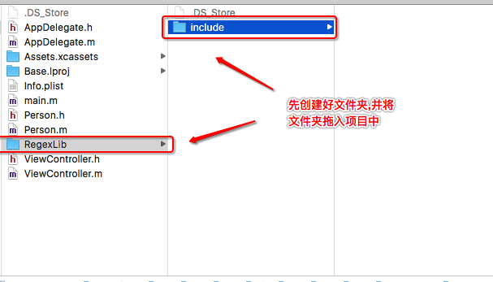

XCode->多人开发
- 一.多人开发
1.项目经理开发 viewcontroller删除点代码后提交并push到共享版本库(source control -> commit)
2.张三开发 1.从共享版本库将最新的代码更新到本地(Source control -> pull)
2.打印"好好工作"提交并push到共享版本库
3.项目经理开发 1.从共享版本库将最新的代码更新到本地(Source control -> pull) 2.创建person类提交并push到共享版本库
4.张三开发 1.从共享版本库将最新的代码更新到本地(Source control -> pull) 2.打印"张三牛x"提交并push到共享版本库5.项目经理开发 1.在张三打印相同的那行代码打印"张三傻x",commit提交到本地版本库
2.点击push到共享版本库,报错过期

3.点击pull更新代码到本地,发生冲突
4.解决冲突,两者都保留5.提交本地的修改commit并push到共享版本库
6.张三开发 从共享版本库将最新的代码更新到本地(Source control -> pull) - 二.使用静态库
1.将静态库拖入项目中,不识别.h文件也不识别.a文件,可以说不识别RegexLib文件夹的所有内容(仅仅是目前xcode对git支持的bug,以前并没有此情况,期待后期修复)
2.解决方案(一): 通过命令行,将RegexLib文件夹的所有内容添加到暂缓区 git add .
3.解决方案(二): 1.先创建真实文件夹拖入到项目中2.静态库和代码拖入到项目中
4.提交添加的静态库并push到共享版本库中
- 二.总结
1.使用git先commit提交到本地版本库,再push到共享版本库 2.更新共享版本库的最新代码使用pull 3.先pull后再修改代码可以有效的避免冲突 4.保证只有一个人在修改storyboard的内容 5.在xcode中使用git解决冲突与svn使用解决冲突类似 6.静态库拖入后不识别两种解决方案 7.xcode中如果对项目进行了修改但是并未提交到服务器，那么可以恢复到最后一个版本（Discard all changees）